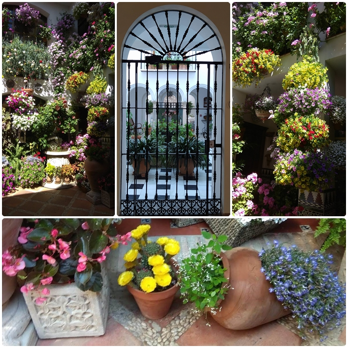

Cordoba Ciudad Patrimonio
Los Patios
En Mayo, durante dos semanas, los vecinos abren las puertas de sus casas para que tanto los cordobeses como los turistas que llegan en este mes a la ciudad, puedan contemplar los patios, pequeños paraísos que normalmente están escondidos ante las miradas curiosas. Esta fiesta tuvo su origen en 1918, cuando se organizó por primera vez el Festival de los Patios, aunque debido a la Guerra Civil española, está tradición fue interrumpida, volviendo a resurgir en los años cincuenta.

Los patios siempre han tenido un importante relevancia desde muy antiguo en la estructura del hogar. La primera constantacia de ello, fue en la ciudad mesopotámica de Ur, donde estás construcciones permitían crear un microclima agradable en zonas muy calurosas, con ayuda de plantas, las sombras y el uso inteligente del agua. Cuando los griegos conquistaron Persia, introdujeron el concepto de patio en la arquitectura, que fue después copiada por los romanos, creando el domus. Por lo tanto, los romanos son quienes introdujeron el patio en Hispania, en el siglo II a.C. aproximadamente, y a ellos debemos también el cultivo en recipientes, en maceta. Mas tarde, los árabes simplificaron el modelo romano de dos patios a uno, y lo separaron de la entrada principal por un zagúan en forma de "L" , evitando miradas indiscretas al interior de la casa. Por él, entraba la luz y se ve ventilaba la casa, sin necesidad de ventana exteriores. Finalmente, en el XIII, cuando lo cristianos conquistaron la ciudad, descubrieron las ventajas climáticas del patio árabe, de modo que lo respetaron y asumieron como propio. Sin embargo, el origen del los patios de la actualidad, llega con la revolución industrial, cuando la gente del campo viene a la ciudad sin un hogar, empiezan a ocupar recintos religiosos y hospitales abandonados, convirtiendo los patios en una zona comunal que ocupaban varias familias, y donde se ubicaban los baños las cocinas, los lavaderos y las letrinas. Como eran gente sin recursos, no podían reparar los huecos y desconchones de los muros, por lo que los tapaban con macetas. Esta costumbre se manteniéndose más tarde cuando las familias podían ir remodelando sus casas, originando esta competición para componer el patio más bonito.